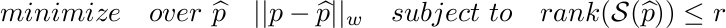
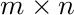
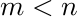
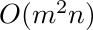
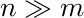

SLRA: Software for weighted structured low-rank approximationThis is the MATLAB/Octave/R package for structured low-rank approximation problem with the following features:
Download and installationLatest stable version (v0.5)Current version (unstable)DocumentationA up-to-date version of the manual can be found here. Installation
First exampleHankel structured low rank approximation problem (small example)
% Generate data np = 50; % number of parameters p0 = (1:np)'; n = 2 % true value of the parameter vector sigma = 0.1; % noise standard deviation p = p0 + sigma * randn(np, 1); % add disturbance c = hankel(p(1:np - n), p(np - n:np)); a = c(:, 1:n); b = c(:, n + 1); % Define the structure and solve the problem via SLRA s.m = n+1; s.n = np-n; s.phi = eye(n+1); tic, [p_slra, i_slra] = slra(p, s, n, opt); t_slra = toc error_data = norm(p - p0) error = norm(p_slra - p0) % Make the same with a permutation matrix I = eye(n + 1); perm = randperm(n + 1); s.phi = I(perm, :); tic, [p_slra2, i_slra] = slra(p, s, n, opt); t_slra = toc error_data = norm(p - p0) error = norm(p_slra2 - p0) More examples can be found in TODO! MathematicsThe package computes locally optimal solutions to low-rank approximation problems 
with the following features:
For an  data matrix, with , the computational complexity of the cost function and derivative evaluation is , so that the package is suitable for applications with . More details can be found in the up-to-date version of the manual. CitingPlease use the following citation to
@TechReport{slra-software,
author = {I. Markovsky and K. Usevich},
title = {Software for weighted structured low-rank approximation},
institution = {Univ. of Southampton},
year = {2012},
number = {339974},
address = {\url{http://eprints.soton.ac.uk/339974}},
}
|